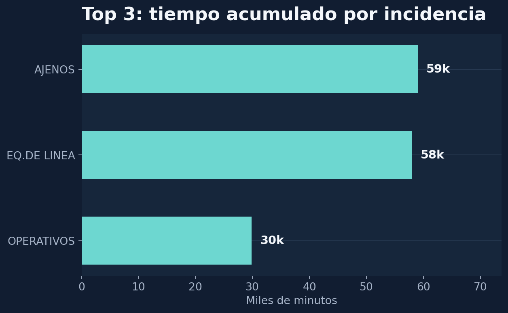
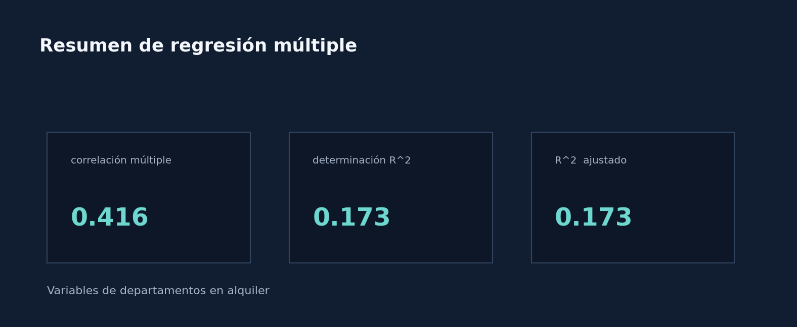
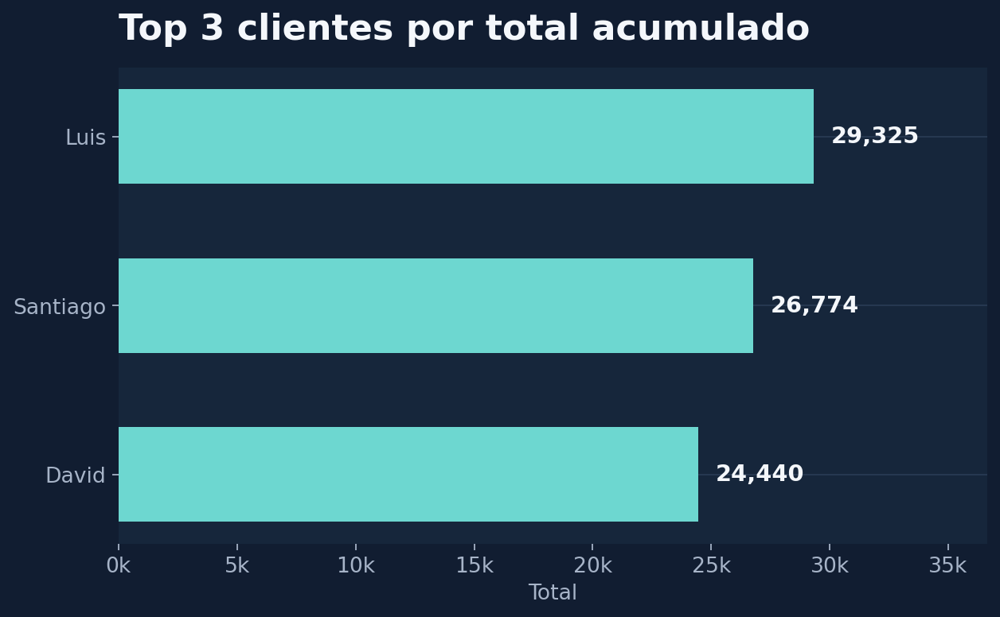
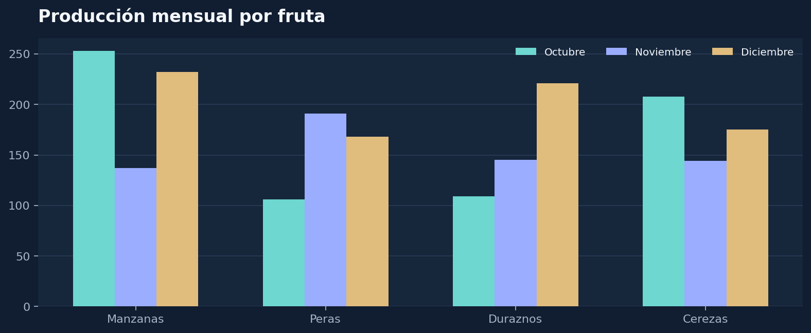

01Análisis exploratorio de datos comerciales
Ejercicio de estadística descriptiva aplicado a un caso comercial, con análisis de correlación y priorización mediante diagrama de Pareto.
ExcelEstadística descriptivaCorrelaciónPareto
Archivo académico
Ejercicios desarrollados durante una etapa previa de formación. Se conservan como evidencia de aprendizaje y no representan el foco profesional actual del portfolio.
Una selección de ejercicios de análisis exploratorio, modelado y comunicación de datos.

01Ejercicio de estadística descriptiva aplicado a un caso comercial, con análisis de correlación y priorización mediante diagrama de Pareto.

02Ejercicio de regresión lineal múltiple para explorar la relación entre variables de departamentos en alquiler y sus valores de referencia.

03Práctica de organización de información de clientes para trabajar atributos, relaciones y una base ordenada para el análisis posterior.

04Selección de tipos de gráficos y representación de información para comunicar hallazgos de forma clara y adecuada al contexto.
Los archivos fuente se mantienen en su formato original como respaldo de cada ejercicio. Los datos y casos se presentan únicamente con fines académicos.